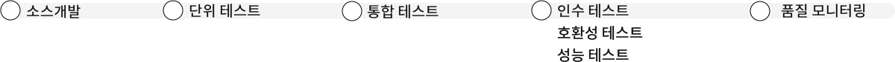
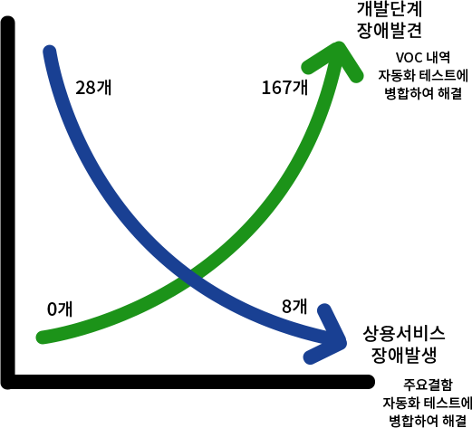

SOLUTION
SOLUTION
어니소프트의 솔루션은 자동화 테스트를 통해 방대한 모바일 테스트 커버리지를 빠르고 효율적으로 검증하여 신속하게 대응합니다.
모바일 서비스 품질검증, 어떤 고민을 하고 계신가요?
매 년 출시되는 다수의 단말기, 테스트 단말기 확보와 관리에 부담
모바일 파편화로 단순, 반복적인 테스트 증가
빠르게 업그레이드 되는 모바일 OS버전
업무효율 향상 및 Human Error 제거 방안 필요
어니소프트(주)의 자동화 솔루션은
기능검증에서 품질 모니터링까지 한 번에 해결합니다.

메뉴얼 테스트
테스트 화면 공유자동화 테스트
회귀 테스트(자동화)메뉴얼테스트
호환성 테스트(자동화)
화면 전환 성능 측정(자동화)모니터링(자동화)
장애화면공유
서비스 배포시간 또한 단축되어
비용 절감 및 빠른 배포가 가능합니다.

자동화 도입은 반복적인 테스트 업무를 줄이고,

Monitoring
Daily Test
System Test
VOC Test
운영기 모니터링
Daily Test 검증
서버/네트워크 검증
VOC 재현 검증

발견된 결함은 자동화 테스트를 통해 재발 방지에 효과적입니다.